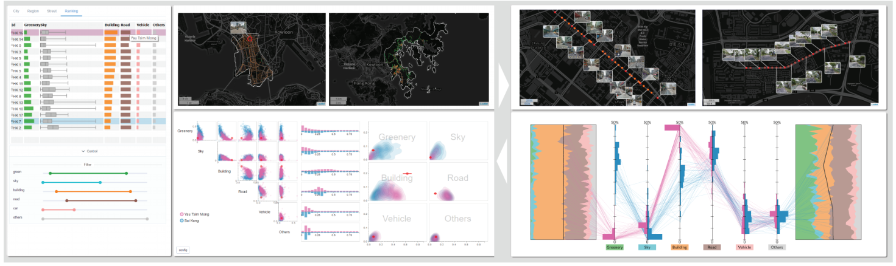
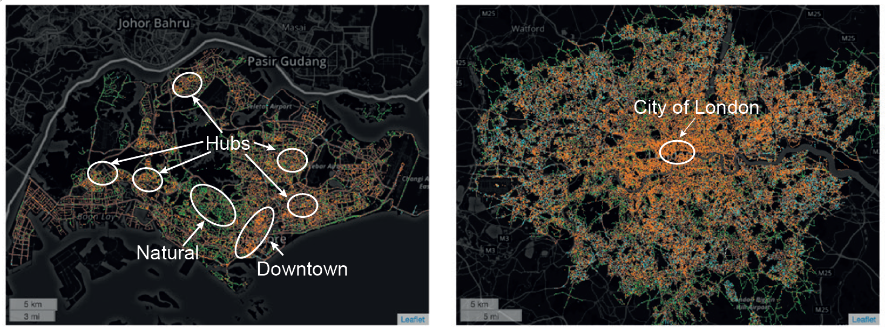
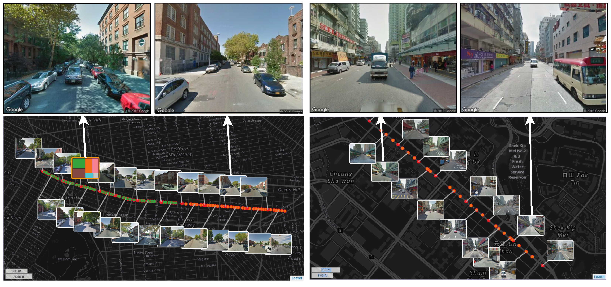

Urban forms at human-scale, i.e., urban environments that individuals can sense (e.g., sight, smell, and touch) in their daily lives, can provide unprecedented insights on a variety of applications, such as urban planning and environment auditing. The analysis of urban forms can help planners develop high-quality urban spaces through evidence-based design. However, such analysis is complex because of the involvement of spatial, multi-scale (i.e., city, region, and street), and multivariate (e.g., greenery and sky ratios) natures of urban forms. In addition, current methods either lack quantitative measurements or are limited to a small area. The primary contribution of this work is the design of StreetVizor, an interactive visual analytics system that helps planners leverage their domain knowledge in exploring human-scale urban forms based on street view images. Our system presents two-stage visual exploration: 1) an AOI Explorer for the visual comparison of spatial distributions and quantitative measurements in two areas-of-interest (AOIs) at city- and region-scales; 2) and a Street Explorer with a novel parallel coordinate plot for the exploration of the fine-grained details of the urban forms at the street-scale. We integrate visualization techniques with machine learning models to facilitate the detection of street view patterns. We illustrate the applicability of our approach with case studies on the real-world datasets of four cities, i.e., Hong Kong, Singapore, Greater London and New York City. Interviews with domain experts demonstrate the effectiveness of our system in facilitating various analytical tasks.



If you find this paper useful, please consider citing it.
@article{shen2018streetvizor,
author = {Qiaomu Shen and Wei Zeng and Yu Ye and Stefan M{"u}ller Arisona and Simon Schubiger and Remo Burkhard and Huamin Qu},
title = {{StreetVizor: Visual Exploration of Human-Scale Urban Forms Based on Street Views}},
journal = {IEEE Transactions on Visualization and Computer Graphics},
volume = {24},
number = {1},
pages = {1004--1013},
year = {2018},
doi = {10.1109/TVCG.2017.2744159},
}